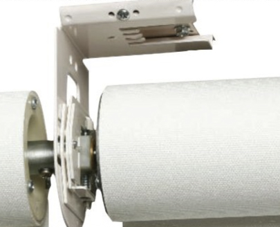

Accesorios
Soportes Ajustables
Una de las grandes diferencias de la cortinas Lutron, radica en su sistema ajustable de soportes.
Los soportes de las cortinas tanto de techo como pared, permiten nivelar a plomo la cortina evitando el fenómeno de "telescopismo"
El telescopismo consiste en el enrrolado inclinado hacia un lado del tubo que hace que los bordes de la cortina rocen contra los soportes y se dañen.
La cortina del lado izquierdo de 5,80 mts de alto se fabrico con tela y costuras especiales para evitar que la tela se enrrollara en sus bordes.
Su propietaria cuenta que ninguna otra compañía de cortinas asumió el reto de fabricarla.
Ver videoCubiertas
Otra de las grandes diferencias de las cortinas Lutron, es que se pueden ordenar con cubiertas tipo cajillo o fascia de sobreponer en techo o de incrustar en drywall.
De esta forma se ocultan los componentes internos de las cortinas y se evita el uso de cornisas de yeso y cortineros decorativos.
Hay diferentes opciones de acabado para mimetizarse con el color de las paredes, techos y muebles.
Rieles laterales
Lutron ofrece sistema de rieles laterales para sellar completamente la entrada de luz solar al espacio. De esta forma usted puede tener un black out real.
Black out traduce "oscuridad completa"
Ver videoFachadas inclinadas
Lutron ofrece sistemas guiados por guaya para mover las telas de forma inclinada. Estos sistemas también pueden ser usados en instalaciones donde las cortinas se exponen a corrientes de viento.
Ventanas curvas
Lutron ofrece acoples angulares para ventanas curvas.